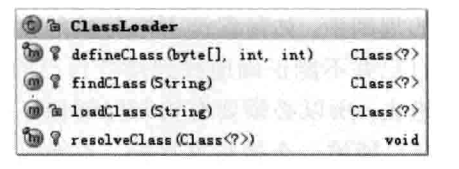
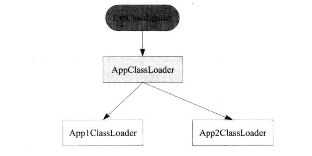
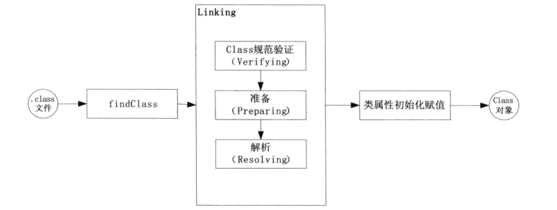

前言
ClassLoader
ClassLoader顾名思义就是类加载器,负责将Class加载到JVM中,ClassLoader除了能将Class加载到JVM中之外,还有一个重要的作用就是审查每个类应该由谁加载,它是一种父优先的等级加载机制,ClassLoader还能将Class字节码重新解析成JVM统一要求的对象格式.
本章学习
1. ClassLoader的加载机制和加载类的过程
2. Java Web中常用的ClassLoader是如何实现的
ClassLoader类结构分析

defineClass:
方法用来将byte字节流解析成JVM能够识别的Class对象,有了这个方法意味着我们不仅仅可以通过class文件实例化对象,还可以通过其它方式实例化对象.
defineClass通常是和findClass方法一起使用的,我们通过直接覆盖ClassLoader父类的findClass方法来实现类的加载规则,从而取得要加载类的字节码,然后调用defineClass方法生成类的Class对象,如果你想在类被加载到JVM中时就被连接,那么可以调用另外一个resolveClass方法.
ClassLoader的等级加载机制
ClassLoader等級加载机制的作用为保证进入JVM的类能够正确的进入到JVM中
整个JVM平台提供三层ClassLoader,这三层ClassLoader可以分为两种类型,可以理解为接待室服务和为会员服务的接待室两种
1. Bootstrap ClassLoader: 这个ClassLoader就是接待室服务自身,它主要加载JVM自身工作需要的类,这个ClassLoader完全是由JVM自己控制,需要加载哪个类,怎么加载都由JVM自己控制,别人也访问不到这个类,即没有更高一级的父加载器,也没有子加载器
2. ExtClassLoader: 这个类加载器为JVM自身的一部分,它并不是JVM亲自实现的,它服务的特定目标在System.getProperty(“java.ext.dirs”)目录下
3. AppClassLoader: 这个类加载器就是专门为接待会员服务的,它的父类是ExtClassLoader,所有在System.getProperty(“java.class.pth”)目录下的类都会被这个类加载器加载
如果我们要实现自己的类加载器,不管你是直接实现抽象类ClassLoader,还是继承URLClassLoader类,或者其它子类,它的父加载器都是AppClassLoader,廷尉不管调用哪个父类构造器,创建的对象都必须最终调用getSystemClassLoader作为父加载器,而getSystemClassLoader方法获取到的正事AppClassLoader,如图:

JVM加载class文件到内存有两种方式:
1. 隐式加载: 所谓的隐式加载就是不通过代码调用ClassLoader来加载需要加载的类,而是通过JVM来自动加载需要的类到内存的方式,例如,当我们在类中继承或者引用某个类时,JVM在解析当前这个类时发现引用的类不在内存中,那么就会自动将这些类加载到内存中
2. 显示加载: 相反的显示加载就是在代码中通过调用ClassLoader类来加载一个类的方式,例如,调用this.getClass.getClassLoader().loadClass()或者Class.forName(),或者我们自己实现的ClassLoader的findClass()方法等
当我们通过自定的ClassLoader显示加载一个类时,这个类又引用其他类,那么这些类就是隐式加载的
如何加载class文件
ClassLoder加载一个class文件到JVM时需要经过的步骤

第一个阶段时找到.class文件并吧这个文件包含的字节码加载到内存中
第二个阶段又可以分为三个步骤，分别时字节码验证，Class类数据结构分析及相应的内存分配和最后的符号表的连接
第三个阶段是类中静态属性和初始化赋值，以及静态块的执行等
加载字节码到内存
在抽象类ClassLoader中并没有定义如何去加载，如何去找到指定类并且把它的字节码加载到内存需要的子类中去实现，也就是要实现findClass（）方法，而在URLClassLoader中通过一个URLClassPath类帮助取得要加载的class文件字节流，而这个URLClassPath定义了到哪里去找这个class文件，如果找到了这个class文件。再读取它的byte字节流，通过调用defineClass（）方法来创建类对象。
在创建URLClassPath对象时会根据传过来的URL数组中的路径来判断时文件还是jar包，根据路径的不同分别创建FileLoader或者JarLoader，或者使用默认的加载器，当JVM调用findCLass时由这几个加载器来讲class文件的字节码加载到内存中 。
验证和解析
字节码验证，类装入其对于类的字节码要做许多检测，以确保格式正确，行为正确
类准备，在这个阶段准备代表每个类中定义的字段，方法和实现接口所必须的数据结构
解析，在这个阶段类装入器装入类所引用的其他所有类，可以用许多方式引用类，如超类，接口，字段，方法签名，方法中使用的本地变量。
初始化Class对象
在类中包含的静态初始化器都被执行，在这一阶段末尾静态字段被初始化为默认值。
常见加载类错误分析
在执行Java程序时经常会碰到ClassNotFoundException和NoClassDefFpimdError两个异常，它们都和类加载有关。
ClassNotFoundException
显示的加载一个类通常有如下方式：
1. 通过Class中的forName（）方法。
2. 通过ClassLoader中的loadClass（）方法。
3. 通过ClassLoader中的findSystemClass（）方法。
这类 错误一般是由于JVM加载指定的字节码到内存中时，并没有找到这个文件对应的字节码，解决的方法就是检查在classpath目录下有没有指定的文件存在，如果不知道当前的classpath路径，可以通过以下命令获取
this.getClass().getClassLoader().getResource(“”).toString()
NoClassDefFoundError
NoClassDefFoundError一般发生在第一次使用命令行执行Java类时碰到。
在JVM的规范中描述了出现NoClassDefFoundError可能的情况就是使用new关键字，属性引用某个类，继承了某个接口或类，以及方法的某个参数中引用了某个类，这是会触发JVM寅时加载这些类时发现这些类不存在的异常
UnsatisfiedLinkError
一般会因为一不小心将在JVM中的某个lib删除了，才会报这个错
ClassCastException
一般出现在强制类型转换时，JVM在做类型转换时会按照如下规则进行检查：
1. 对于普通的对象，对象必须时目标类的实例或咪表类的子类的实例，如果目标类时接口，那么会把它当作实现了该接口的一个子类
2. 对于数组类型，目标类必须时数组类型或java.lang.Object,java.lang.Cloneable,java.io.Serizlizable.
如果不满足上面的规则，JVM就会报错，避免错误的两种方式如下：
1. 在容器类型中显示地指明这个容器所包含的对象类型，如在上面的Map中可以写Map<String,Integer> m=new HashMap<String,Integer>().这样上面的代码在编译阶段就会检查通过
2. 先通过instanof检查是不是目标类型，然后再进行强制类型转换
ExceptionInInitializerError
这个错误再JVM的规范中时这样定义的：
1. 如果Java虚拟机试图创建类ExceptionInInitializerError的新实例，但是因为出现Out-Of-Memory-Error而无法创建新实例，那么就抛出OutOfMemoryError对象作为代替
2. 如果初始化器抛出一些Exception，而且Exception类不是Error或者它的某个子类，那么就会创建ExceptionInInitializerError类的一个新实例，并用Exception作为参数，用这个实例代替Exception
常用的ClassLoader分析
Tomcat仍然沿用了JUM的类加载规范,也就是委托市加载,保证核心类通过AppClassLoader来加载,但是Tomcat会优先检查WebappClassLoader已经加载的缓存,而不是JVM的findLoadedClass缓存,
如果将一个WEB应用直接放到webapp目录下,那么Tomcat就通过StandardClassLoader直接加载,而不是通过WebappClassLoader来加载.
如何实现自己的ClassLoader
ClassLoader能够完成的事情有以下几种:
1. 在定义路径下查找自定义的class类文件,也许我们需要的class文件并补总是在已经设置好的classPath下面,那么我们必须想办法来找到这个类,在这种情况下我们需要自己实现一个ClassLoader.
2. 对我们自己的要加载的类做特殊处理,如保证通过网络传输的类的安全性,可以将类经过加密后再传输,在加载JVM之前需要对类的字节码再解码,这个过程可以在自定义的ClassLoader中实现
3. 可以定义类的实现机制,如果我们可以检查已经加载的class文件是否被修改,如果修改了,可以重新加载这个类,从而实现类的热部署
加载自定义路径下的class文件
指定ClassLoader的加载路径来实现
2
3
4
5
6
7
8
9
10
11
12
13
14
15
16
17
18
19
20
21
22
23
24
25
26
27
28
29
30
31
32
33
34
35
36
37
private String classPath;
public PathClassLoader(String classPath){
this.classPath=classPath;
}
protected Class<?> findClass(String name) throws ClassNotFoundException{
if("xis".startsWith(name)){
byte[] classData=getData(name);
if(classData == null){
throw new ClassNotFoundException();
}else{
return defineClass(name,classData,0,classData.length);
}
}else{
return super.loadClass(name);
}
}
private byte[] getData(String className){
String path=classPath+File.separatorChar+className.replace('.', File.separatorChar)+".class";
try {
InputStream is=new FileInputStream(path);
ByteArrayOutputStream stream=new ByteArrayOutputStream();
byte[] buffer=new byte[2048];
int num=0;
while((num=is.read(buffer))!= -1){
stream.write(buffer,0,num);
}
return stream.toByteArray();
} catch (Exception e) {
// TODO: handle exception
}
return null;
}
}
继承URLClassLoader类来加载URL下的类
2
3
4
5
6
7
8
9
10
11
12
13
14
15
16
17
18
19
private String packageName="com.xis";
public PathClassLoader(URL[] urls,ClassLoader parent) {
super(urls,parent);
}
protected Class<?> findClass(String name) throws ClassNotFoundException{
Class<?> aClass=findLoadedClass(name);
if(aClass !=null){
return aClass;
}
if(!packageName.startsWith(name)){
return super.loadClass(name);
}else{
return findClass(name);
}
}
}
实现类的热部署
JVM在加载类之前会检查请求的类是否已经被加载过来,也就是调用findLoadedClass()
方法查看是否能够返回类实例,如果类已经加载过来,再调用loadCLass()将会导致类冲突
但是JVM表示一个类是否是同一个类会有两个条件,一是看这个类的完整类名是否一样,这个类名包括类所在的包名,二是看加载这个类的ClassLoader是否是同一个,这里所说的同一个是指ClassLoader的实例是否是同一个实例,即使是同一个ClassLoader类的两个实例,加载同一个类也会不一样
所以要实现类的热部署可以创建不同的ClassLoader的实例对象,然后通过这个不同的实例对象来加载同名的类
如果重复加载了同一个类,抛出java.lang.LinkageError异常;
使用不同的ClassLoader实例加载同一个类时,
Classloader对象也会像其它对象一样,当没有对象引用它时,也会被JVM回收,但被这个Classloader加载的类的字节码会保存在JVM的ermGen区,这个数据一般只是在执行FullGC时才会被回收,所以如果在应用中存在大量的动态类加载,而Full GC又不是太频繁,也会出现内存溢出;
总结
ClassLoader将一个类加载到JVM中的过程,在该过程中的解析,验证,以及常用ClassLoader的实现,如重复加载同一个类时,会抛出java.lang.LinkageError异常,以及如何将网络上下载下来的字节码文件,通过自己实现一个ClassLoader类来对该字节码文件进行解码和加载到JVM中.